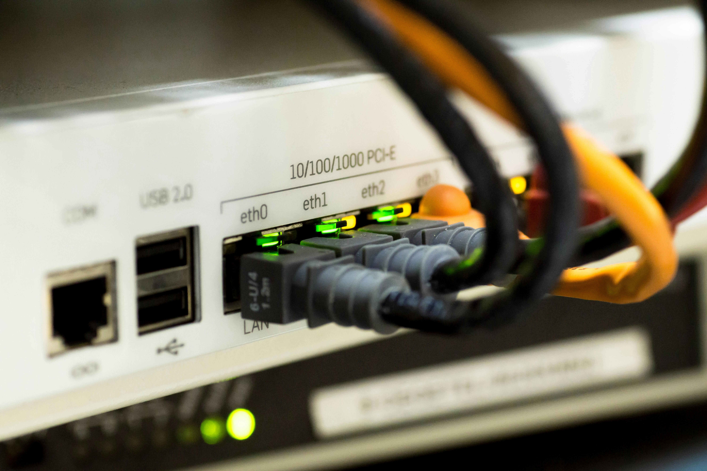

Presentacion del tema

Introduccion
Una red informatica es un sistema formado por dispositivos interconectados que intercambian informacion mediante medios fisicos o inalambricos. En este conjunto pueden participar computadores, telefonos, impresoras, servidores, puntos de acceso, routers y otros equipos especializados. El objetivo principal de una red es permitir la comunicacion eficiente entre usuarios y sistemas, ademas de facilitar el acceso compartido a recursos como archivos, aplicaciones, impresoras o servicios en la nube.
El estudio de las redes es importante porque hoy casi todas las actividades dependen de la conectividad. La educacion virtual, el comercio electronico, la banca digital, la administracion empresarial y las comunicaciones personales requieren infraestructuras de red estables y bien organizadas. Comprender los tipos de red ayuda a elegir la arquitectura adecuada segun la distancia que se desea cubrir, la velocidad esperada, el numero de usuarios y el presupuesto disponible.
Entre las clasificaciones mas conocidas se encuentran las redes LAN, MAN y WAN. Cada una responde a necesidades distintas. Una red LAN se usa en espacios pequenos y controlados, una red MAN conecta varias redes dentro de una misma ciudad y una red WAN permite unir redes a gran escala, incluso entre paises. Por esta razon, conocer sus caracteristicas, ventajas y limitaciones es fundamental para el diseno de soluciones tecnologicas actuales.
Desarrollo y contenido
Subtemas y conceptos clave
La red LAN o Local Area Network conecta dispositivos en una zona limitada, por ejemplo una casa, una oficina o un laboratorio. Se caracteriza por ofrecer alta velocidad, baja latencia y administracion local. La red MAN o Metropolitan Area Network enlaza varias redes LAN ubicadas en sectores cercanos, normalmente dentro de una ciudad. Por su parte, la red WAN o Wide Area Network integra redes separadas por grandes distancias mediante enlaces de telecomunicaciones, fibra optica o infraestructura de proveedores.
En una red tambien intervienen conceptos como direccionamiento IP, ancho de banda, latencia, seguridad, escalabilidad y topologia. El direccionamiento IP identifica a cada dispositivo dentro de la red. El ancho de banda representa la cantidad de datos que se pueden transmitir en un tiempo determinado. La latencia expresa el retraso en la comunicacion. La seguridad protege la informacion frente a accesos no autorizados y la escalabilidad indica la facilidad para ampliar la infraestructura sin afectar el servicio.
Componentes y herramientas
- Router: dirige el trafico entre diferentes redes.
- Switch: conecta equipos dentro de una misma red local.
- Cableado estructurado: soporta la transmision fisica de datos.
- Punto de acceso: extiende la conectividad inalambrica.
- Servidor: centraliza recursos, aplicaciones o almacenamiento.
- Firewall: filtra el trafico y mejora la seguridad.
- Protocolos como TCP/IP: regulan la comunicacion entre dispositivos.
Ventajas
- Permiten compartir informacion y recursos con rapidez.
- Favorecen el trabajo colaborativo y el acceso remoto.
- Mejoran la organizacion de procesos empresariales y educativos.
- Facilitan la centralizacion de datos y copias de seguridad.
Desventajas
- Requieren mantenimiento tecnico y monitoreo constante.
- Pueden presentar riesgos de seguridad si no se configuran bien.
- Las redes amplias suelen tener mayor costo de implementacion.
- Una falla central puede afectar a varios usuarios al mismo tiempo.

| Tipo de red | Alcance | Velocidad habitual | Costo | Ejemplo |
|---|---|---|---|---|
| LAN | Edificio o campus pequeno | Alta | Bajo a medio | Laboratorio escolar |
| MAN | Ciudad o area metropolitana | Media a alta | Medio | Red municipal |
| WAN | Paises o continentes | Variable | Medio a alto | Internet corporativa |
Ejemplos y casos practicos
Un ejemplo funcional de red LAN puede observarse en una institucion educativa donde todos los equipos de una sala de informatica se conectan al mismo switch para acceder a internet, a una impresora compartida y a una plataforma interna. En este escenario, la administracion es sencilla porque todos los dispositivos se encuentran en el mismo espacio fisico y pueden ser supervisados por el personal tecnico de forma directa.
Como caso practico de red MAN se puede mencionar una universidad con varias sedes distribuidas en diferentes puntos de una misma ciudad. Cada sede dispone de su propia red LAN, pero todas ellas se integran mediante enlaces metropolitanos para acceder a una misma base de datos, sistemas academicos centralizados y plataformas de videoconferencia institucional. Esto permite una operacion coordinada sin necesidad de duplicar servicios en cada edificio.
En el caso de una red WAN, un ejemplo real es una empresa multinacional con oficinas en varios paises. Cada sede opera con su propia red local, pero todas se conectan mediante enlaces WAN y servicios en la nube para compartir informacion financiera, inventarios, correo corporativo y aplicaciones de gestion. Aunque este modelo ofrece gran cobertura y flexibilidad, requiere mayor inversion, politicas estrictas de seguridad y una planificacion mas robusta.
Si se comparan los tres tipos, la LAN destaca por su velocidad y facilidad de control; la MAN por su capacidad de conectar varias instalaciones urbanas; y la WAN por su alcance global. En consecuencia, no existe una red mejor en todos los casos, sino una opcion mas adecuada segun el contexto, el numero de usuarios, la ubicacion geografica y los objetivos de la organizacion.

Conclusiones
Las redes LAN, MAN y WAN cumplen funciones esenciales dentro de la infraestructura tecnologica actual. Cada una responde a una escala distinta de comunicacion y por eso su uso depende del entorno donde se implementa. Comprender sus diferencias permite planificar mejor la cobertura, el rendimiento, la seguridad y los costos de una solucion de conectividad.
En la industria actual, las redes son la base del trabajo colaborativo, la transformacion digital, los servicios en la nube y el intercambio inmediato de informacion. Desde una pequeña oficina hasta una organizacion global, el uso adecuado de estos tipos de red hace posible que personas, procesos y sistemas permanezcan conectados de forma eficiente.